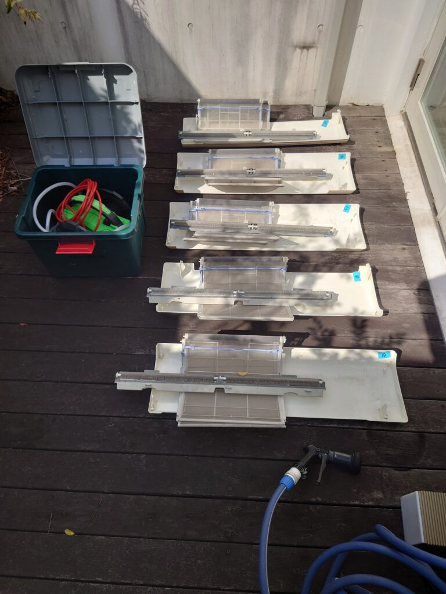

2023年4月4日 エアコン分解洗浄クリーニング 内部パーツ、フィルター細部迄緻密にカビ汚れ除去、除菌コーティングします!カビ汚れ、藻や苔の堆積汚れが付着した室外機の高圧洗浄クリーニングを同時に実施しております!  エアコン内部洗浄クリーニングは、内部パーツの詳細細密なところまで、徹底的にカビ汚れ、堆積汚れ、油汚れを除去クリーニングして、除菌コーティングをしております。お掃除機能タイプ、壁掛けノーマルタイプ、併せて室外機の高圧洗浄クリーニングを同時に実施しております、ぜひお問い合わせ下さい！